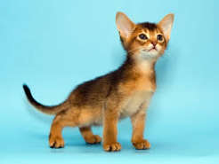
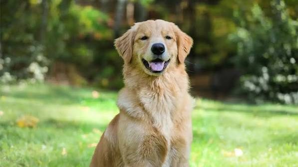

Mascotas Disponibles para Adopción 🐾
Conoce a nuestros rescatados. Cada uno cuenta con protocolo completo de salud antes de su integración a un hogar.
Perro 🐕
Rocco
2 Años
Macho
Talla Mediana
Rocco es muy juguetón, activo y cariñoso. Le encanta salir a caminar y se lleva excelente con niños y otros perros.

Gato 🐈Luna
1 Año
Hembra
Hogareña
Tranquila, observadora y muy limpia. Luna busca un hogar apacible donde pueda tomar la siesta bajo el sol.

Perro 🐕Max
8 Meses
Macho
Cachorro
Un cachorro lleno de energía, rescatado cerca de las canchas del plantel. Ya cuenta con su primera vacuna y desparasitación.
🏥 Garantía de Salud PAEC
Todas las mascotas entregadas a través del proyecto PAEC del CBTis No. 116 cuentan con cartilla de vacunación al día, desparasitación interna/externa y compromiso de esterilización gratuita en el módulo escolar.